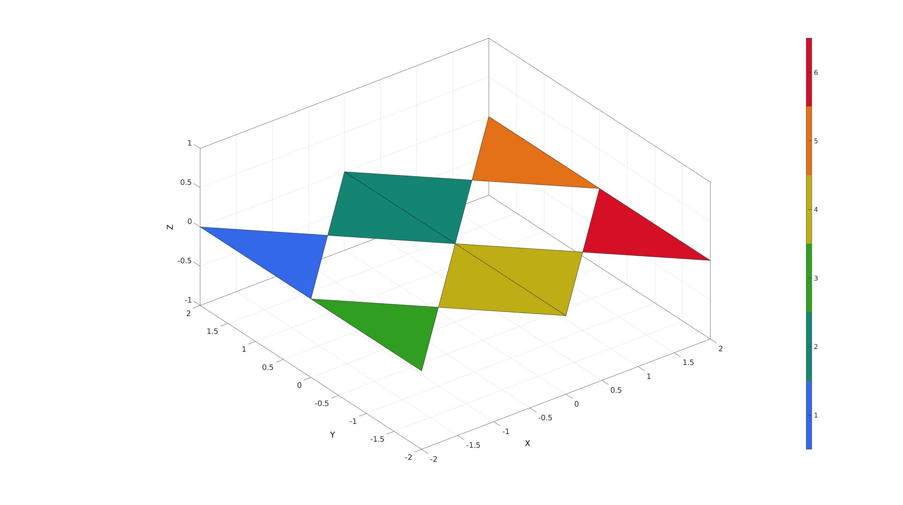
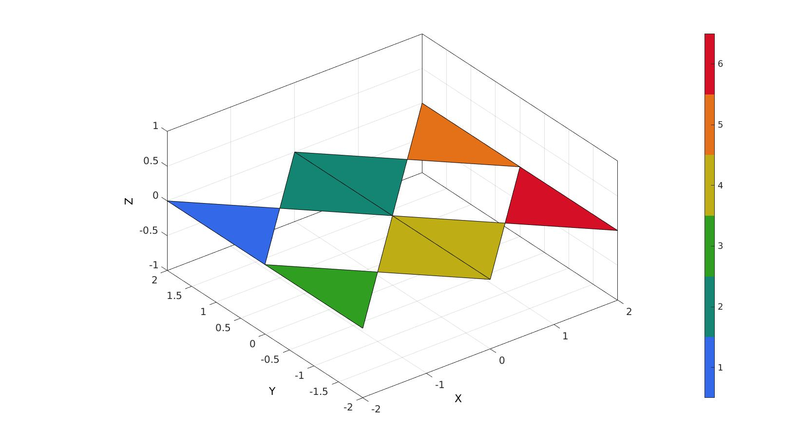

tesgroup
Below is a demonstration of the features of the tesgroup function
Contents
clear; close all; clc;
Syntax
[G,G_iter]=tesgroup(F,indExclude);
Description
Example: grouping detached mesh components
% Simulating a mesh consisting of seperate pieces. [F,V]=graphicsModels(9); %Cut mesh in different directions logicRemoveVertices=false(size(V,1),1); for q=2:3 w=max(V(:,q))-min(V(:,q)); m=0.5*(max(V(:,q))+min(V(:,q))); logicRemoveVertices=logicRemoveVertices | ((V(:,q)>=(m-w/25)) & V(:,q)<=(m+w/25)); end logicKeep=all(~logicRemoveVertices(F),2); % Creating detached mesh set [Fs,Vs]=patchCleanUnused(F(logicKeep,:),V);
Grouping mesh components
optionStruct.outputType='label';
G=tesgroup(Fs,optionStruct);
Visualize grouped mesh
cFigure; gpatch(F,V,'w','none',0.3); gpatch(Fs,Vs,G,'k',1); axisGeom; view([-90, 0]); camlight headlight; colormap gjet; icolorbar; drawnow;
Example: grouping while avoiding bowtie problem
Create example bowtie problem
V=[-1 1 0; -1 -1 0; 0 0 0; 1 -1 0; 1 1 0]; F=[1 2 3; 3 4 5]; V(:,2)=V(:,2)+1; V2=V; V2(:,2)=-V2(:,2); V=[V;V2]; F=[F; F+size(V2,1)]; V(:,1)=V(:,1)-max(V(:,1)); V2=V; V2(:,1)=-V2(:,1); V=[V;V2]; F=[F; F+size(V2,1)]; [F,V]=mergeVertices(F,V); % Sub-triangulate to test different densities % [F,V]=subtri(F,V,3); Eb=patchBoundary(F,V);
% Get patch connectivity C=patchConnectivity(F,V); E=C.edge.vertex; vertexEdgeConnectivity=C.vertex.edge; % Work out membership to boundary set sizVirt=size(V,1)*ones(1,2); ind_uniqueEdges=sub2indn(sizVirt,sort(E,2)); ind_boundaryEdges=sub2indn(sizVirt,sort(Eb,2)); logicIsBoundaryVertex=ismember(ind_uniqueEdges,ind_boundaryEdges); vertexBoundaryEdgeConnectivity=vertexEdgeConnectivity; vertexBoundaryEdgeConnectivity(vertexBoundaryEdgeConnectivity>0)=logicIsBoundaryVertex(vertexBoundaryEdgeConnectivity(vertexBoundaryEdgeConnectivity>0)); indBoundaryVertices=unique(Eb(:)); logicVertexBowtied=sum(vertexBoundaryEdgeConnectivity,2)>2; indExclude=find(logicVertexBowtied);
clear optionStruct;
optionStruct.indExclude=indExclude;
[G,G_iter]=tesgroup(F,optionStruct);
[I,J]=find(G);
C=double(G);
C(G)=J;
C=max(C,[],2);
cFigure; hold on; gpatch(F,V,C); axisGeom; colormap gjet; icolorbar; drawnow;

GIBBON www.gibboncode.org
Kevin Mattheus Moerman, gibbon.toolbox@gmail.com
GIBBON footer text
License: https://github.com/gibbonCode/GIBBON/blob/master/LICENSE
GIBBON: The Geometry and Image-based Bioengineering add-On. A toolbox for image segmentation, image-based modeling, meshing, and finite element analysis.
Copyright (C) 2019 Kevin Mattheus Moerman
This program is free software: you can redistribute it and/or modify it under the terms of the GNU General Public License as published by the Free Software Foundation, either version 3 of the License, or (at your option) any later version.
This program is distributed in the hope that it will be useful, but WITHOUT ANY WARRANTY; without even the implied warranty of MERCHANTABILITY or FITNESS FOR A PARTICULAR PURPOSE. See the GNU General Public License for more details.
You should have received a copy of the GNU General Public License along with this program. If not, see http://www.gnu.org/licenses/.